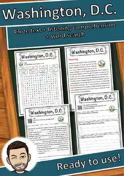
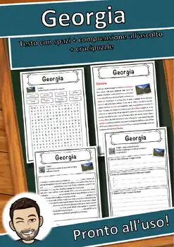
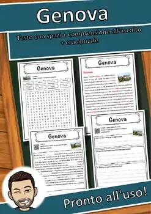
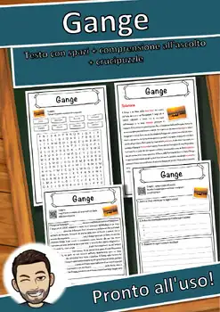
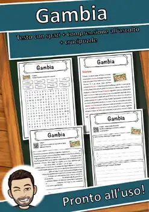
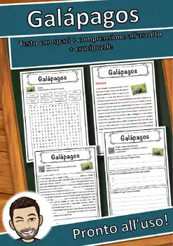
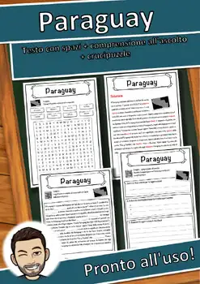

Washington, D.C. – Worksheet: cloze text, listening and word search
Worksheet about the U.S. city Washington, D.C.: an informative text for students (about ages 10-11), cloze text with word bank, listening comprehension with English audio (QR code), word search and full answer key. Official population figure with date. Text based on en.wikipedia.org/wiki/Washington,_D.C. (CC BY-SA), image: Wikimedia Commons (license checked). Print-ready PDF.
⭐ Did this resource work well in your classroom? Please leave a quick review on TPT – you earn TPT credits for future purchases, and it helps me a lot! Click "Follow" on my store page to be the first to hear about new freebies.
U.S. STANDARDS (alignment):
- RI.4.1; RI.4.4; L.4.4; RI.5.1; RI.5.4; L.5.4; C3 D2.Geo.1.3-5; C3 D2.Geo.2.3-5; C3 D2.Eco.1.3-5; C3 D2.Eco.2.3-5
- Frameworks: Common Core State Standards for ELA/Literacy (CCSS); C3 Framework for Social Studies State Standards (NCSS)
- Also supports the state standards of non-CCSS states, e.g. Texas TEKS (English Language Arts and Reading, §110); Florida B.E.S.T. Standards (ELA); Virginia Standards of Learning (SOL); Indiana Academic Standards; Oklahoma Academic Standards (OAS); South Carolina College- and Career-Ready Standards; Alaska English/Language Arts Standards; Nebraska College and Career Ready Standards for ELA; Minnesota K-12 Academic Standards in ELA; Georgia Standards of Excellence (GSE) / Georgia K-12 ELA Standards; Arizona English Language Arts Standards (AzCCRS); New York Next Generation Learning Standards; Ohio's Learning Standards; Missouri Learning Standards; North Carolina Standard Course of Study; Tennessee Academic Standards; Louisiana Student Standards; Kentucky Academic Standards; Alabama Course of Study; Utah Core Standards; Massachusetts Curriculum Frameworks; Pennsylvania Core Standards; New Jersey Student Learning Standards; West Virginia College- and Career-Readiness Standards; Texas TEKS (Social Studies, §113); Florida NGSSS (Social Studies); Virginia History and Social Science SOL; Indiana Academic Standards for Social Studies; Oklahoma Academic Standards for Social Studies; Georgia GSE Social Studies; New York K-12 Social Studies Framework – and the CCSS-based standards of all other U.S. states (please check the exact local code).
Images and text were created with AI assistance and carefully checked by a teacher.
Similar resources

Georgia – Italian Reading Comprehension Worksheet (Scheda): Cloze & Listening

Genova – Italian Reading Comprehension Worksheet (Scheda): Cloze & Listening

Gange – Italian Reading Comprehension Worksheet (Scheda): Cloze & Listening

Gambia – Italian Reading Comprehension Worksheet (Scheda): Cloze & Listening

Galápagos – Italian Reading Comprehension Worksheet (Scheda): Cloze & Listening
